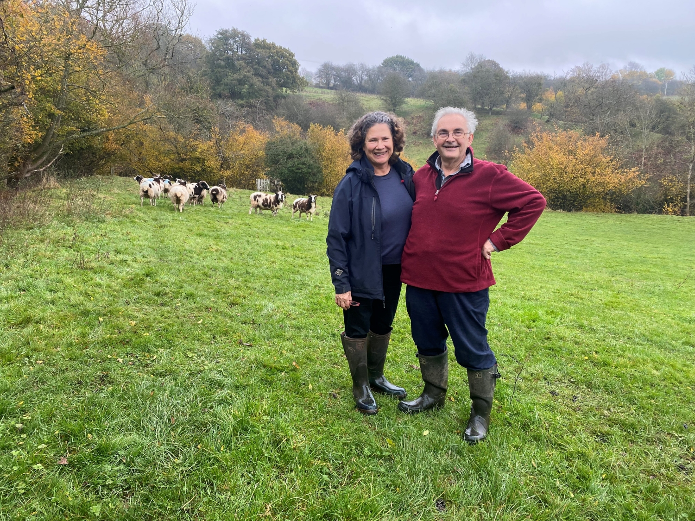
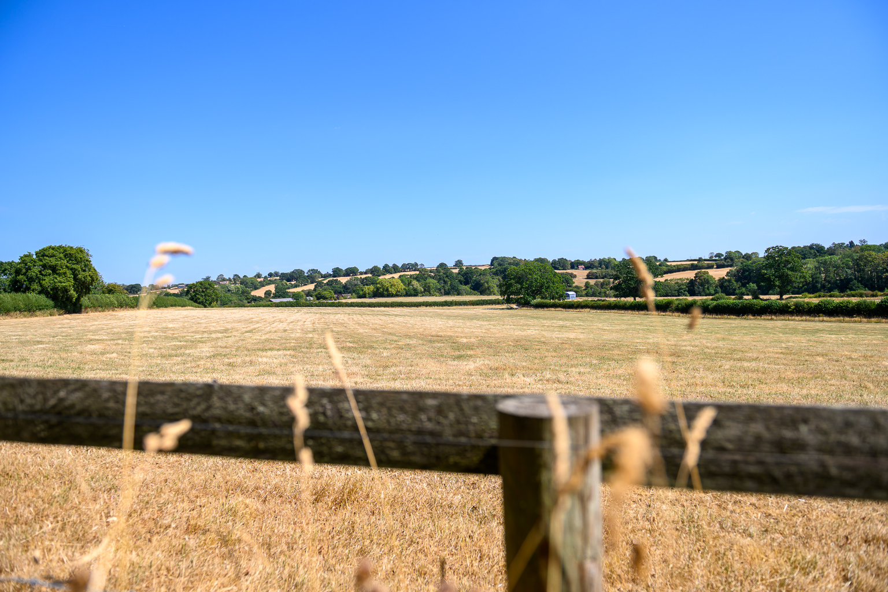

A working farm, a family home, and two cottages to share
Reaside has been a working farm for generations. Today it's home to James and Olwen, their animals, and two cottages where guests are welcomed as part of the place, not just visitors passing through.
James & Olwen, your hosts
Long before Reaside welcomed its first guest, James and Olwen were already involved in travel and hospitality. In the early 1990s, Olwen founded In The Saddle, a specialist riding holiday company, after a sabbatical trip to South America revealed just how hard it was to find reliable advice on riding abroad. A research trip to Montana in 1995 confirmed the idea was sound, and the pair spent the following decades building it together into a company now offering over a hundred riding holidays in more than forty countries, still run from an office right here at Reaside.
We live on site, in the farmhouse right next to the cottages, and we still farm the land around you, which means the animals you'll meet on your walks are as much a part of daily life here as they are part of the view.
Kingfisher and The Hayloft were converted from the farm's original buildings, and we've tried to keep hold of what made them special (the beams, the quiet, the sense of being tucked into the landscape) while making sure they're genuinely comfortable to stay in.
Because we're right here, if anything comes up during your stay (a question about the pool, a recommendation for dinner in Ludlow, or just directions for a riverside walk), we're only ever a few steps away.

100 acres, bordered by the River Rea
The farm sits on a bend of the river, with water on three sides and around two kilometres of bank to explore. It's a proper working landscape of fields, hedgerows, an equestrian arena and areas of new woodland planting, alongside the gardens closer to the cottages.
That mix is deliberate. We want guests to get a genuine taste of life on a Shropshire farm, without giving up any of the comforts of a well-run holiday cottage.

How we like to do things
Genuinely on hand
We live next door, not down the road, so help is always close by if you need it, and out of the way if you don't.
Properly looked after
Both cottages are designed for relaxing in comfort. They are kept to the same standard we'd want for our own family: well equipped, well heated, and thoroughly cleaned between guests.
A working farm, not a museum
The animals, fields and arena you see are part of daily life here, which is exactly what gives Reaside its character.
We'd love to welcome you to Reaside
Get in touch with any questions, or go straight ahead and check availability for your stay.